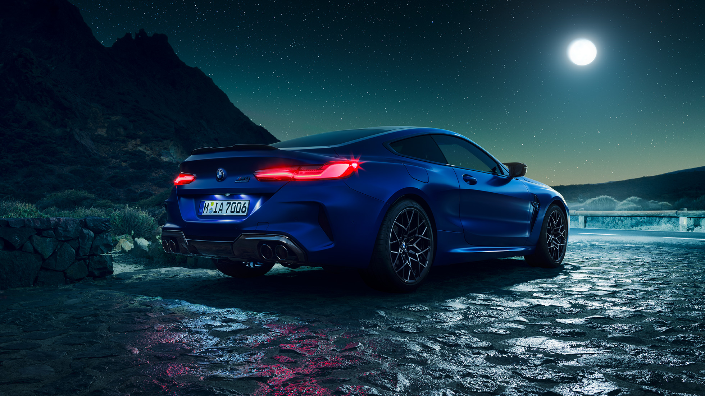
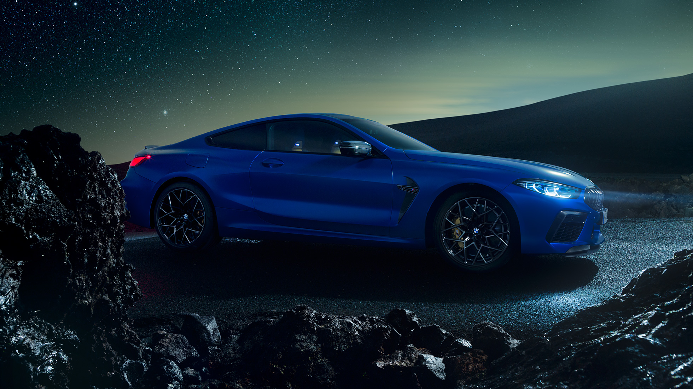

Промышленная фирма была основана Карлом Фридрихом Раппом в октябре 1916 года, официально компания BMW была зарегистрирована 20
июля 1917 года, но первоначально — как производитель авиационных двигателей, Bayerische Flugzeug-Werke. Округ Мюнхена — Milbertshofen
был выбран потому, что он располагался близко от Flugmaschinenfabrik Густава Отто — немецкого производителя самолётов.
В 1916 году компания подписывает контракт на производство двигателей V12 для Австро-Венгрии. Нуждаясь в дополнительном финансировании,
Рапп получает поддержку Камилло Кастильони и Макса Фрица, компания воссоздаётся как Bayerische Motoren Werke GmbH. Быстрый рост предприятия
в 1917 году вызвал некоторые трудности, после чего компанию покинул Рапп, руководство перешло к австрийскому промышленнику Францу Йозефу Поппу,
а в 1918 году компания была переименована в BMW AG.
В 1919 году Франц Димер установил первый мировой рекорд BMW, поднявшись на высоту 9760 метров на аэроплане с двигателем BMW.
После Первой мировой войны по условиям Версальского мирного договора 1919 года было запрещено производство самолётов в Германии,
вследствие чего Густав Отто закрыл свою фабрику, а BMW перешла на производство сельскохозяйственной техники, предметов домашнего
обихода и тормозов для поездов.
В 1928 году BMW приобретает автомобильный завод в Айзенахе (Тюрингия), а с ним — и лицензию на производство небольшого автомобиля под названием Dixi.
Компания заключает лицензионное соглашение на постройку радиальных двигателей с американским производителем авиамоторов Pratt & Whitney. Dixi — название
первой машины BMW. Она была разработана в 1929 году Austin Motor Company, однако автомобили производились в Айзенахе до сороковых годов. В том же году Эрнст
Хенне на мотоцикле с мотором BMW становится самым быстрым мотоциклистом в мире.
Могущественный в довоенную эпоху концерн BMW оказался после Второй мировой войны в критическом положении во многом из-за запрета на производство составлявших
основу её бизнеса авиационных двигателей и уничтожения или занятия противниками Германии по мировой войне заводов концерна в Мюнхене (Американская зона оккупации Германии)
и Айзенахе (Советская военная администрация Германии). Так, Мильбертсхофенский автозавод под Мюнхеном, согласно решению американских оккупационных властей, подлежал
сносу. Как и другим немецким автомобильным компаниям с разрушенной Второй мировой войной промышленной базой, BMW понадобились годы на возрождение в качестве
серьёзного производителя автомобилей: лишь в 1962 году компания выпустила на рынок автомобиль, позволивший ей выполнить эту задачу.
Стратегия BMW в послевоенные годы заключалась в попытках поправить дела за счёт производства мотоциклов с малой мощностью, так как после войны Союзники позволили BMW производить мотоциклы
с объёмом двигателя лишь до 250 см3, а также запретили производство больших комфортабельных седанов.[источник не указан 2464 дня] Кроме того, компания потеряла завод в Айзенахе, который
остался на территории, оккупированной советскими войсками, а затем во вновь образованной ГДР. Однако рыночная конъюнктура и предпринятые менеджментом BMW попытки восстановить производство
авиационных моторов привели компанию BMW к самому краю пропасти, что едва не закончилось установлением над ней контроля со стороны извечного конкурента — Mercedes-Benz.


